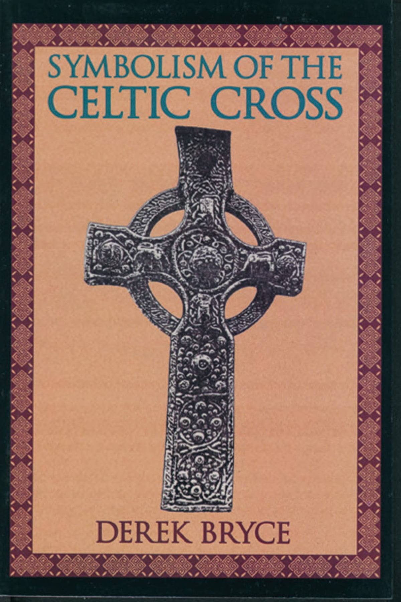

0859 0450 Be Thou My Vision _Irish
prayer 我心中王，成為我異象，生命387 ▲ SLANE
| 簡介
Be Thou My Vision |
St. Patrick was a missionary in
Ireland in the 5th century, King Logaire of Tara decreed that no one was
allowed to light any fires until a pagan festival was begun by the
lighting of a fire on Slane Hill. In a move of defiance to this pagan
ritual, St. Patrick did light a fire, and, rather than execute him, the
king was so impressed by his devotion that he let him continue his
missionary work. Three centuries later, a monk named Dallan Forgaill
wrote the Irish poem, “Rop tú mo Baile” (“Be Thou my Vision)” about this
legend of St. Patrick. These stanzas are selected from a
20th-century English poetic version of an Irish monastic prayer dating
to the 10th century or before.
They are set to an Irish folk melody SLANE (named for a hill in County
Meath, Ireland, where St. Patrick's lighting of an Easter fire) that
has proved popular and easily sung despite its lack of repetition and
its wide range. |
|
|
|
1 Be thou my vision, O Lord of my
heart;
naught be all else to me, save that thou art.
Thou my best thought, by day or by night,
waking or sleeping, thy presence my light.
2 Be thou my wisdom, be thou my true word;
I ever with thee, and thou with me, Lord.
Born of thy love, thy child may I be,
thou in me dwelling and I one with thee.
3 Be thou my buckler, my sword for the fight.
Be thou my dignity, thou my delight,
thou my soul’s shelter, thou my high tow’r.
Raise thou me heav’nward, O Pow’r of my pow’r.
4 Riches I heed not, nor vain empty praise;
thou mine inheritance, now and always.
Thou and thou only, first in my heart,
Ruler of heaven, my treasure thou art.
5 "*True Light of heaven, when vict’ry is won
may I reach heaven’s joys, O bright heav’n’s Sun!
Heart of my heart, whatever befall,
still be my vision, O Ruler of all.
*Alternate phrase: “High King”
Source: Voices Together #549
|
註：歌詞同主是我萬有（生命聖詩，387）
求我心中王，成為我異象，
我別無愛慕，唯主我景仰；
充滿我思想，我心響往，
睡著或睡醒，慈容是我光。
成為我智慧，成為我箴言，
我願常跟隨，你在我身邊；
你是我聖父，我是你子，
你常居我心，我與你合一。
我不求虛名，也不求富有，
你是我基業，從今到永久；
惟你在我心，永遠居首，
天上大君王，你是我萬有。
天上大君王，光明的太陽，
容我享天樂，我已打勝仗；
我心屬你心，永無變更，
萬有的主宰，成為我異象。 |

https://freewechat.com/a/MzA4MzQ1NDA5MQ==/2649871932/3
 |
| |
|
http://www.hymncompanions.org/Sep/18/stream.php
懇求心中王，成為我異象，
萬事無所慕，惟主是希望！
願祢居首位，日夜導思想，
工作或睡覺，慈容作我光。
成為我智慧，成為我箴言，
我願常跟祢，祢作我良伴。
祢是聖天父，我得後嗣權，
祢住我心殿，我與祢結連。
不掛意富裕，不羨慕虛榮，
主是我基業，一直到永恆。
惟有主基督，能居我心中，
祂是天上王，勝珍寶權能。
天上大君王，輝煌的太陽，
我贏得勝仗，天樂可分享。
境遇雖無常，但求心中王，
掌管萬有者，永作我異象。
 (請點耳機收聽)
(請點耳機收聽)
默示即異象，它是神的話語，帶給我們急迫感和方向感，沒有異象，民就放肆。
李秀全牧師說：「異象把神與人聯在一起，天人合一是挑戰，而天人合作是恩典。異象把供與求聯在一起，但常有供不應求和供不適求的現象。
教會的危機是領袖和同工間的信任，溝通和配搭出問題。 異象把個人和團隊聯在一起，有相同的目標，可同心協力。教會在異象中投入使命，因而得復興。」
這首詩的原文是公元八世紀時，一位愛爾蘭的信徒所寫，作者姓名失傳，但因原作是蓋爾語文（Gaelic）及古愛爾蘭的辭藻，故後人知道作者是居住在一個愛爾蘭綠草如茵、山巔煙霧瀰漫的幽谷中。
這是一首禱告的詩，求主使我們以基督為榜樣，成為我們的異象。 詩中稱神為「心中王」、「希望」、「智慧」、「箴言」、「良伴」等。
我們常有夢想卻缺乏異象。事奉若無異象，則一切都是徒勞。
1905年，柏妮（Mary E. Byrne, 1880-1931）將這首古愛爾蘭詩英譯成散文，發表在雜誌上。
七年後，賀依理（Eleanor Henrietta Hull, 1860-1935）知道它原是詩體，又將散文改寫成詩。
柏妮出生在愛爾蘭都柏林，大學畢業後，在其家鄉從事中等教育研究的工作。她最重大的貢獻是編纂「愛爾蘭語大辭典」。
賀依理出生在英國曼徹斯特，是愛爾蘭教科書協會的創辦人，也是倫敦愛爾蘭文學協會的會長，著有數本有關愛爾蘭歷史與文學的書。
這首詩歌最初引用愛爾蘭民謠 With My Love on the Road，1919年被收集在愛爾蘭聖詩中，則以一小山名Slane為曲調名。
相傳在公元五世紀時，國王有令，在復活節前夕，必須由他在山上點火，宣稱春到人間。 那年愛爾蘭聖人聖柏爵克（St. Patrick）在Slane山上先國王燃點火炬，國王感於他的勇敢，准他在愛爾蘭傳道。
後人為紀念他，尊他為愛爾蘭守護聖人。 嗣後，又有許多人改編本詩歌曲調的和聲，常用的是艾文思（David Evans,1874-1948,見九月十三日）或莊遜（Norman
E. Johnson,1928-1983）的和聲。 此歌以同聲唱為宜。
有了異象，更要有使命感。 五十年前彭蒙惠（Doris
Brougham）教士到台灣花蓮時，並不清楚自己的方向，她求神給異象，在神帶領之下，走向大眾傳播，設立救世傳播協會，空中英語教室，成為千萬人的祝福。
中英文聖詩集參考
英文歌名 Be
Thou My Vision
頌主新歌 359
頌主新歌(中英雙語) 362
教會聖詩 338
生命聖詩 387
新聖詩 5
歡欣讚美 562
聖徒詩集 409
台語聖詩 279
恩頌聖歌 360
世紀讚頌 331
頌主聖詩 417
青年聖歌III 105
讚美詩(新編)補充本 170

celtic_cross
https://freewechat.com/a/MzA4MzQ1NDA5MQ==/2649871932/3
〈成为我异象〉这首第八世纪、北爱尔兰修道院传统风格的圣诗，所表达的基督徒生命意境相当地深邃。那种对神的认知和渴求，也非一般的基督徒所能理解。
首先，什麽是“异象”？或许从Vision这个字来探讨，比较容易明白。Vision首先有“视力”之意。如果从心灵抽象的角度，则表示“见视”或“眼光”。我们说人要做大事，就不能“短视”，要有“远见”，意思就是说要有“异象”（vision）。
有一个作家如此说∶有异象而无任务，只是一个梦想；有任务而无异象，成了苦差事；有异象而又有任务，就是世界的希望。
而基督徒说∶“异象就是能看见那隐而未现事物的一种艺术。”又说∶“异象是属于神的。一个工作能成功之前，必定先有一个异象。”圣经中《箴言》29∶18也指明∶“没有异象（或做默示），民就放肆；惟遵守律法的，便为有福！”是否有异象和如何得到异象，就决定了人的不同路途。
〈成为我异象〉中，这群渴慕神的修士们，又是如何看待异象的呢？其实将此诗歌看为一首祷词更为恰当。全词以第一人称写成，写出祈祷的人与神那种亲密的关系。他不是祈求神赐他异象，使他成功；他求的是让神成为他的异象，让神成功。
他对神的认识，可从他丰富的称呼中看出∶我心中王；我异象；我最美的意念；我的智慧；我的箴言；我父；天上大君王；万有的主宰。
不仅如此，诗人更直接向神说∶惟主你是我所敬仰，我别无爱慕；或醒、或睡，主的同在是我所向往；像子与父，你居我心，我们合而为一；我不再求虚名和富贵，你在我心居首位；我心属你心，永不变更。显然，主已经成为他的异象、他的一切。
这是何等的权利能被称为神的儿女！这些词句里流露著喜乐与感恩，更述说著住在主里面的事实。因为称呼神是全能的父或上帝，和住在他和他的爱里面是两个截然不同的经历。
此诗类似于当年修士们经常吟诵的护卫祷词，特别用在心灵的争战上。事实上，这首圣诗的确可以成为我们每天敬拜神，求神“醒时引导，睡时护卫”的祷词，它提醒我们将自己的位置摆正，让主居首位，并完全的管理。
每当唱这首圣诗，就想起神说的话∶“┅┅他（基督）在万有之先，万有也靠他而立。他也是教会全体之首，他是元始，是从死里首先复生的，使他可以在凡事上居首位┅┅使他们真知神的奥秘就是基督；所积蓄的一切智慧知识，都在他里面藏著。”（《歌罗西书》1∶17-20；2∶2-3）
“神将他的灵赐给我们，从此就知道我们是住在他里面，他也住在我里面┅┅凡认耶稣为神儿子的，神就住在他里面，他也住在神里面。神爱我们的心，我们也知道，也信。”（《约翰一书》4∶13-16）
这首诗的曲调来自古爱尔兰民歌，调名为Slane，音程宽但旋律容易上口，广受人们的喜爱。每四句诗为一节，无重覆句。这首具有独特风格的圣诗，是历久弥新的佳作，它的词曲一直触动著渴慕基督的人的心。
一个人如果愿意如此以神的爱为爱，以神的心为心、以神的智慧为智慧，他便能以神的眼光，看见一般人一生不能见的属天异象了！

读者并可上网聆听∶ http://cyberhymnal.org/htm/b/t/btmvison.htm
作者为女中音，任教中华基督教音乐崇拜研究院。曾录制《世纪圣诗》第一集《我宁愿有耶稣》。
“成为我异象”详细资料
这首诗的原文是公元八世纪时，一位爱尔兰的信徒所写，作者姓名失传，但因原作是盖尔语文（Gaelic）使用古爱尔兰措辞，故后人知道作者是居住在一个爱尔兰绿草如茵，山巅烟雾弥漫的幽谷中。
1905年，柏妮（Mary E. Byrne, 1880-1931）将这首古爱尔兰诗英译成散文，发表在杂志上。 七年后，贺依理（Eleanor
Henrietta Hull,1860-1935）知道它原是诗体，又将散文改写成诗。
柏妮出生在爱尔兰都柏林，大学毕业后，在其家乡从事中等教育研究的工作。她最重大的贡献是编纂「爱尔兰语大辞典」。贺依理出生在英国曼彻斯特，是爱尔兰教科书协会的创办人，也是伦敦爱尔兰文学协会的会长，着有数本有关爱尔兰历史与文学的书。
这是一首祷告的诗，求主使我们以基督为榜样，成为我们的异象。 诗中称 神为「心中王」、「希望」、「智能」、「箴言」，「良伴」等。
我们常有梦想，但却乏异象。事奉的道上若无异象，则一切都是徒劳。
这首诗歌最初引用爱尔兰民谣With My Love on the Road，1919年被收集在爱尔兰圣诗中，则以一小山名Slane为曲调名。
相传在公元五世纪时，国王有令，在复活节前夕，必须由他在山上点火，宣称春到人间，那年爱尔兰圣人圣柏爵克（St. Patrick）在Slane山上在国王之先，燃点火炬，国王有感于他的勇敢，准他在爱尔兰传道。
后人为纪念他，尊他为爱尔兰守护圣人。
其后有许多人改编曲调的和声，常用的是伊文思（David Evans,1874-1948）和庄逊（Norman E.
Johnson,1928-1983）的和声。此歌以齐唱为宜。
http://www.congsing.org/be_thou_my_vision.html
8th c. Irish hymn; trans. by M. Byrne, 1905; versified by E. Hull, 1912
Based on Ephesians 1:17–19
Addressed to God
|
Be thou my vision, O Lord of my heart; |
Mark 10:51; 2 Cor. 5:7 |
|
naught be all else to me, save that thou art— |
Phil. 3:7 |
|
thou my best thought by day or by night, |
2 Cor. 10:5 |
|
waking or sleeping, thy presence my light. |
1 Thess. 5:10 |
|
|
|
|
Be thou my wisdom, and thou my true word; |
1 Cor. 1:21; John 1:1 |
|
I ever with thee and thou with me, Lord; |
Matt. 28:20; John 14:16 |
|
thou my great Father, I thy true son; |
Gal. 4:6 |
|
thou in me dwelling, and I with thee one. |
Eph. 3:17; 1 Cor. 12:12 |
|
|
|
|
Be thou my battle shield, sword for my fight; |
Ex. 15:3; Deut. 33:29; Eph. 6:16–17 |
|
be thou my dignity, thou my delight, |
Gal. 6:14; Ps. 37:4 |
|
thou my soul’s shelter, thou my high tow’r: |
Ps.18:2; 61:3–4; 91:2 |
|
raise thou me heav’nward, O Pow’r of my pow’r. |
1 Sam. 2:1; Ps. 28:8; 140:7; Eph. 2:6 |
|
|
|
|
Riches I heed not, nor man’s empty praise, |
Job 31:24–28; Prov. 11:4; Gal. 1:10 |
|
thou mine inheritance, now and always: |
Deut. 9:10; Matt. 19:29 |
|
thou and thou only, first in my heart, |
Ex. 20:3; 1 Sam. 7:3; Matt. 22:37–38 |
|
High King of heaven, my treasure thou art. |
Dan. 4:34, 37; Is. 33:6 |
|
|
|
|
High king of heaven, my victory won, |
Rev. 3:12 |
|
may I reach heaven’s joys, O bright heav’n’s Sun! |
Rev. 21:23 |
|
Heart of my own heart, whatever befall, |
Ps. 73:26 |
|
still be my vision, O Ruler of all. |
|
John Milton, when mourning in Paradise
Lost the loss of his sight, concludes thus:
So much the rather thou Celestial light
Shine inward, and the mind through all her powers
Irradiate, there plant eyes, all mist from thence
Purge and disperse, that I may see and tell
Of things invisible to mortal sight. (III.51–55)
The sight of the Christian is unlike that of the non-believer in that God’s
eyes take the place of his mortal ones and by them he sees in everything that
reality which is “invisible to mortal sight.”
This hymn, which comes to us from eighth-century origins, celebrates the utter
revision which Christianity makes on a person. He comes to see that everything
in heaven and on earth, in the mind of man and in the course of events, is
God’s. All that we know of is directly linked to the person of God. The famous
opening phrase of the hymn sums up this total sovereignty by asking God to be
our vision. By this, the poet means not so much that God would help us to see,
but that God would be all that we see. This is confirmed in the second line of
the first stanza which puts God not only above all
other earthly interests but asks him to push out all
other interests but our interest in Him.
Having introduced our general petition in the first stanza, the poem in
the middle stanzas proceeds to apply it to three areas of life that humans
have commonly idolized. Wisdom (stanza 2), power (stanza 3), and riches
(stanza 4) together summarize the common lusts of our visually-impaired race.
In truth, they are the three attributes of the Lamb first listed in
Revelation 5:12 (see also Eph. 1:17–19), but, in our rebellion, we look to and
adore distortions of these things rather than the Lamb in whom alone they can
be found. True wisdom is God’s wisdom, which we can only learn from his word,
as a son learns from his father. “Hear, O sons, a father’s instruction, and be
attentive, that you may gain insight” (Prov. 4:1). Likewise, true power is
God’s power.
In the third stanza we learn that our defence in battle (likely to be
understood as spiritual) is God, but so is our glory in victory—here described
as “dignity.” Beautifully modelled after the Psalms, the poem describes God
both as shelter and tower, the latter image becoming a support by which we are
raised to heaven. Finally, true riches are God’s riches: “his glorious
inheritance in the saints,” as the Apostle Paul put it. Riches of the worldly
sort are no interest to us, but the spiritual treasure of God certainly is.
“Let not the wise man boast in his wisdom, let not the mighty man boast in his
might, let not the rich man boast in his riches, but let him who boasts boast
in this, that he understands and knows me, that I am the Lord” (Jer. 9:23).
The last stanza confirms God as the only one who can give us heaven’s
joys. Whether we are meant to take these joys here on earth or actually in
heaven is not explicit from the hymn. We may be inclined to take the last
verse as solely about our glorification, but we need not. God is the
high king of heaven and he is our
victory won, so we need not read an implied future tense. The poem concludes,
then, by reprising the general petition of its opening, with the same imagery
as before of light (“O bright heav’n’s Sun”), heart (“Heart of my own heart”),
and vision (“still be my vision”), in echoes of the Apostle Paul’s prayer that
the “eyes of our hearts” be enlightened (Eph. 1:18).
The union of this text with the old Irish folk tune SLANE is
a happy one. At first glance the melody may seem a bit wandering because it
lacks the direct repetition and parallelism that one normally expects in tunes
of this length, but the melody achieves a different kind of coherence based on
the interrelatedness of its material and its overall shape. To see the tune’s
connectedness its four phrases are best compared one atop the other. For
convenience, we will refer to each measure in terms of its phrase number and
letter of measure therein (i.e. the tune’s first measure would be 1A).
Phrase 1 
Phrase 2 
Phrase 3 
Phrase 4 
1C is the same as 1A, but missing the ornament on the measure’s last beat. 2A
follows on in the same vein, only a step higher and even more static. Notice
how 2B and 2C relate—one is up a step and then a leap, the other is down a
step and then a leap. All the while, the tune’s range is growing upward and
upward toward phrase 3. 3A is really related to 1A, 1C, and 2A, this time with
more ornament added in the last two thirds of the measure for the climactic
description of God in relation to ourselves placed at the beginning of the
third line in every stanza. 4A is the one instance where leap follows on leap,
and this gesture (unusual in old tunes) creates nice relationships with the
text. On it we find words like “waking,” and phrases like “raise thou me” and
“High King.” In all instances the idea of ascent (which the tune there quickly
does) is fitting.
If we step back to consider the overall shape of the melody, we find it no
less satisfying than the details already noted.
Phrase 1 rises from “do” to “mi” (beginning and ending with what music
theorists call tonic harmony) via a downward arc.
Phrase 2 answers phrase 1 by rising from “re” to “sol” (beginning and ending
with dominant harmony) via an upward arc.
Then, after the climactic ornament of 3A,
phrase 3 plummets from “la” down more than an octave, so that phrase 4
can begin and end on “do” with an upward arc. Thus a lovely, early-medieval,
Irish prayer has been set to a tune that also happens to be Irish and old,
that seems to fit the meaning of particular words and phrases in the prayer,
and that is beautiful in its own right.
https://hymnary.org/text/be_thou_my_vision_o_lord_of_my_heart
According to mythology, when St. Patrick was a missionary in Ireland in the 5th
century, King Logaire of Tara decreed that no one was allowed to light any fires
until a pagan festival was begun by the lighting of a fire on Slane Hill. In a
move of defiance against this pagan ritual, St. Patrick did light a fire, and,
rather than execute him, the king was so impressed by his devotion that he let
Patrick continue his missionary work.
Three centuries later, a monk named Dallan Forgaill wrote the Irish poem, “Rop
tú mo Baile” ("Be Thou my Vision), to remember and honor the faith of St.
Patrick. Forgaill was martyred by pirates, but his poetry lived on as a part of
the Irish monastic tradition for centuries until, in the early 20th century,
Mary Elizabeth Byrne translated the poem into English, and in 1912, Eleanor Hull
versified the text into what is now a well-loved hymn and prayer that at every
moment of our lives, God would be our vision above all else.

Text:
Eleanor Hull’s versification consists of five verses. Today, most hymnals
include four of those verses: 1, 2, 4, and 5, leaving out verse 3: “Be thou my
breastplate, my sword for the fight; be thou my dignity, though my delight, thou
my soul’s shelter, and thou my high tower: raise thou me heavenward, O Power of
my power."
Other minor changes include altering some of the gender exclusive language to be
inclusive, or changing “High king” in stanzas three and four to “Great God.”
Tune:
There’s only one tune associated with this text, and that’s SLANE, aptly named
for the location at which St. Patrick is said to have defied the orders of King
Logaire. This tune comes from an Irish folk song of the same name, and was
combined with the hymn text by Welsh composer David Evans in the 1927 edition of
the Church Hymnary of the Church of Scotland.
This is a hymn that has been performed and recorded by too many artists to
count, but that provides the worship leader with a lot of options for arranging.
Many artists keep the traditional Irish feel to the tune, and sing it at a
slower pace – just be careful it doesn’t drag. Here are some good arrangement
options:
-
Enfield has a version with a simple yet powerful harmony that really builds
into the fourth verse, and an uplifting turn-around in between verses - while
they perform this on strings, it could easily be adapted for piano.
-
Eden’s Bridge’s version is really quite simple – on top of a base of ethereal
synth lies a simple yet varied banjo or acoustic guitar accompaniment. Without
the synth, an option for arranging this version is to sing verse 1 a cappella,
verse 2 with banjo/guitar picking, verse 3 with strumming and light drums, and
verse 4 either the same as verse 3 but pulled back, or a cappella with just
drum.
Notes
SLANE is an old Irish folk
tune associated with the ballad "With My Love on the Road" in Patrick W.
Joyce's Old Irish Folk Music and Songs (1909). It became a hymn
tune when it was arranged by David Evans (PHH
285) and set to the Irish hymn "Be Thou My Vision" published in the Church
Hymnary (1927). SLANE is named for a hill in County Meath, Ireland,
where St. Patrick's lighting of an Easter fire–an act of defiance against
the pagan king Loegaire (fifth century)–led to his unlimited freedom to
preach the gospel in Ireland.
SLANE is an attractive
tune with phrases that demonstrate a wide range and creative melodic
patterns. The harmonization, one of two settings in The Hymnal 1982,
is accessible to good singers (especially to low basses!), but most
congregations may prefer unison throughout. Support the singing with rather
light but energetic accompaniment.
When/Why/How:
This hymn acts as a prayer to our God that He would be the first that we seek
after, and continually refocus the direction of our life. This hymn can be sung
throughout the liturgical year, and is a particularly powerful prayer of
response to God’s call for our lives, whether heard in a sermon or a Scripture
passage. It is most often used as a hymn of dedication, and fits well during a
time of profession of faith or baptism. Consider using this verse from William
Cowper’s hymn “O for a Closer Walk with God” as a prayer before or after: "The
dearest idol I have known, Whate’er that idol be, Help me to tear it from thy
throne, And worship only thee." Other songs of dedication could be well paired
with this hymn, such as "I Surrender," "Take My Life," and "Take, O Take Me as I
Am."
https://www.bayviewbiblechurch.org/post/the-story-behind-be-thou-my-vision
Updated: Sep
24, 2020
Music has a way of dividing us. Turn on music in a car full of
people and you will get a car full of mixed reactions. But there
are certain songs that everyone enjoys. Most would have a hard
time turning down the sound of bagpipes playing
Amazing Grace or of a chorus singing
Ode to Joy.
In the same way, the hymn,
Be Thou My Vision fits into this category. It's one of the
most loved songs of all times. The medieval melody brings images
of rolling hills and Scottish highlands, causing people to cry
when they hear it, and millions more to request it for their own
funerals.
But very few people know the story behind the song. In fact, the
history of
Be Thou My Vision is as ancient and mysterious as the
haunting hymn itself. A quick look in a hymnal offers little help.
Ambiguous entries like “Irish Melody” and “Anonymous” appear where
the name of the composer and lyricist typically belong.
So what is the true story behind this legendary hymn? Where did it
come from? And if it's so old, how did it survive to the 21st
century?

The Melody
The story behind
Be Thou My Vision begins with St. Patrick. When he was just
sixteen years old, pirates kidnapped Patrick and sold him into
slavery in Ireland. This caused him to enter adulthood knowing the
Gaelic language and Irish customs. He also became a Christian
during this time. Years later, he managed to escape and return
home to his family in England. While most would've stayed home
forever, Patrick chose to go back to Ireland and become a
missionary!
What does all this have to do with
Be Thou My Vision? On Easter Sunday in 433, the local Irish
king issued a decree in observation of a pagan Druid festival that
prohibited anyone from lighting a flame or candle. Patrick,
refusing to honor anyone but Christ, stood against the king. That
morning, Patrick risked his life by climbing to the tallest hill
in the area and lighting a huge fire. As the ancient Irish people
woke up, they could all see Patrick's defiance of the king. He
could not hide his light. Patrick wanted to show the world that
God’s light shines in darkness, and that only He deserves praise.
Years later, an unknown composer wrote a melody in honor of
Patrick's heroism. Called, "Slane," the now-forgotten composer
named it after the hill where Patrick shined his light: Slane
Hill.
People still recognize the tune today.
Lyrics
While the story behind the melody is legendary, the history behind
the lyrics is much more obscure. Tradition tells us that an Irish
poet from the 6th century named
St. Dallán Forgaill wrote a Gaelic poem entitled
Rop tú mo Baile,
in honor of St. Patrick.

Borrowing from another medieval poem,
St. Patrick’s Breastplate, Forgaill's lyrics referred to
God as his “battle shield" and “high tower," phrases that still
exist in the modern version today.
Sadly, the oldest existing copy of Forgaill's poem comes from the
14th century, which included no indication of its author. Because
no other historical evidence connects Forgaill to the poem, it's
impossible to verify the actual origin of the lyrics to
Be Thou My Vision. As a result, most hymnals attribute the
song to "Anonymous."
As the years passed,
Slane, and
Rop tú mo Baile fell into obscurity. Their authors, once
known, faded away into the fogs of time.

The Song's Discovery
But in 1905, nearly fifteen hundred years after Saint
Patrick lit a flame on Slane Hill, the forgotten hymn re-emerged
from the mists of time.
Mary Byrne, a 25-year-old university student, discovered the
14th century copy of
Rop tú mo Baile and translated it
into English for the very first time.
It that moment, the now-hallowed lyrics, “Be thou my vision... oh
Lord of my heart” sprang from the forgotten pages of time and into
the modern world. Later in 1912, an Irish woman named
Eleanor Hull set the words to music. The melody she set it to
was none other than "Slane," the medieval tune written in honor of
St. Patrick. The hymn became famous overnight and appeared in its
first hymnal in 1919. In 2019, the world celebrated the 100th
anniversary of the modern version of
Be Thou My Vision.
Why it Matters
The story behind
Be Thou My Vision is the story of the Gospel. In God’s
timing, He took what the world ignored and made it something
beautiful. As far as man was concerned, music like
Rop tú mo Baile and
Slane were dead--nothing more but irrelevant fragments from
antiquity. But God took what was dead and made it alive again. He
took what was ancient and made it new.
So is
Be Thou My Vision an old song? Yes and no. Just like he took
dusty pages of lyrics and infused it with new life, He took us and
our sinful flesh and infused us with His Spirit.
Be Thou My Vision is the song of new life. It’s the song of
the new life of St. Patrick, who shined his light for Christ. It’s
the song of the new life in Ireland, where dead paganism gave way
to centuries of vibrant faith. It’s the song of new life in the
singer’s heart, where God shines His forgiveness in a sinful soul.
And it is the song of new life for the hymn itself, which millions
now enjoy again after centuries of obscurity.
No one’s story is done whose pages rest in the hands of the
Father. No song is too old that it cannot be sung again in the
choir of God’s grace.
Be Thou My Vision is a reminder that man’s ways are not God’s
ways. The mist descends in the hills and rises to the sky. The
mossy mountains crumble and groan. But the grace of God shines
bright, as it did on Slane Hill in the days of Saint Patrick.
https://en.wikipedia.org/wiki/Dall%C3%A1n_Forgaill
From Wikipedia, the free encyclopedia
Eochaid mac Colla (c. 560
– 640), better known as Saint Dallán or Dallán Forgaill (Old
Irish: Dallán Forchella; Latin: Dallanus
Forcellius; Primitive
Irish: Dallagnas Worgēllas), was an early Christian Irish
poet and saint known as the writer of the "Amra
Coluim Chille" ("Elegy of Saint Columba") and, traditionally, "Rop
Tú Mo Baile"[1] ("Be
Thou My Vision").
Personal history[edit]
Saint Dallan's given name was Eochaidh (Old
Irish: Eochaid); his father was Colla, a descendant
of the legendary High King Colla
Uais, and his mother was Forgall (Old Irish: Forchella).[2] His
nickname, Dallán ("little blind one"), was earned after he lost his
sight,[3] reputedly
as a result of studying intensively.
He was born in Maigen (now Ballyconnell),
at the eastern edge of the territory of the Masraige of Magh
Slécht in modern County
Cavan. He was not a member of the Masraige but
belonged to a branch of the Airgíalla called
the Fir Lurg, who were in the process of spreading southwards into
Fermanagh and Cavan. (The barony of Lurg in County
Fermanagh was named after them.)[4] His
was a first cousin of Saint
Mogue. (The Life of Máedóc of Ferns says in ch. 72 that Dallán
and Máedóc were sons of two brothers and he lived in Kildallan
townland.)[5] He
was also a fourth cousin of Tigernach
of Clones.[6]
The "Amhra Coluim Cille", a panegyric on Columba,
written shortly after Columba's death in 597, is his best known work[7] and
considered "one of the most important poems we have from the early
medieval Gaelic world".[5] It
is reported that after completing the work, Dallan regained his sight. It
was claimed that those who recited the praises of Columba from memory
would receive the gift of a happy death,[8] a
custom that was widely abused by those who attempted to rely on their
memory rather than a virtuous life.[9] The
"Amhra Coluim Cille" became a popular text for students in Irish
monasteries.
The "Amra Senáin",[10] a
funeral oration in praise of Senán
mac Geirrcinn (Senán of Iniscattery), was said to preserve from
blindness those who recited it with devotion.[9]
In c.640 Dallan was visiting his friend
Saint Conall Cael at his monastery on Inishkeel when
pirates raided the island monastery. Dallan was reportedly beheaded, and
it is said that God reattached his head to his body after he was martyred.[11] He
was buried on Iniskeel; his friend Canall Cael was later laid to rest in
the same grave.[9]
He was acclaimed a saint in the early 11th
century, during the reign of the High King of Ireland Máel
Sechnaill mac Domnaill but was already listed as a saint in the
earlier 9th century martyrologies compiled by Óengus
of Tallaght.[4] A
medieval poem entitled "On the breaking up of a School" composed by Tadhg
Og O Huiginn, c.1400, refers to the death of Dallán which caused his
school to break up and the students to disperse as they would accept no
other master.[12] In
a list of ancient Irish authors contained in the Book of Ballymote, Dallán
is called "grandson of testimony".[13]
Saint Dallan was a poet, Chief
Ollam of Ireland, as well as a scholar of Latin scriptural learning.[4][14] He
helped to reform the Bardic Order at the Convention of Drumceat.[15]
In addition to "Amra Choluim
Chille" and "Amra Senáin", the following works are attributed
to Dallán, although some may be later works by other poets who credited
Dallan with authorship in order to make their poems more famous.
1. Amra Conall Coel – in praise of St.
Conall Coel, abbot of Inishkeel
2. Dubgilla dub-airm n-aisse[16]
3. Fo réir Coluim cén ad-fías[17][18]
4. Conn cet cathach a righi (This is the
final poem in the tale "Aírne Fíngein")[19]
5. Rop tú mo baile[20]
6. Comaillfithir d'Éirinn ídail dar a hora[21]
Churches[edit]
Although he was not a priest, Dallán founded
several churches throughout Ireland, such as Kildallan in
County Cavan, Disert,
Tullyhunco in County Cavan, Kildallan,
Westmeath, Burnchurch in
County Kilkenny, Killallon in
County Meath, Clonallan in
County Down and Tullygallan in
County Donegal. He probably did this out of his friendship for the clergy
and perhaps to ensure Masses for his soul. Because of this he was known
as Forgaill Cille in medieval texts, meaning 'Forgaill of the
Churches'.
References

(Saint Dallán Forgaill, c.530-598)
https://blog.xuite.net/weilanchun/twblog/128879488
愛爾蘭民謠
愛爾蘭民謠可細分為四種，第一種為古老的詠唱歌曲（Air），最具盛名的代表歌曲就是夏日最後玫瑰與丹尼男孩，第二、三種為吉格與連索（Jig and
Reel），吉格音樂是電影最喜歡使用當為配樂的音樂，如「鐵達尼號」與「紐約黑幫」，愛爾蘭國舞「吉格舞」更是「大河之舞」的起源，並且是現代「踢踏舞」根源。連索音樂的源頭為蘇格蘭，在愛爾蘭亦相當風行。第四種為聞名全世界的「塞爾特情歌」（Celtic
Song）。
吉格與連索
吉格（Jig）與連索（Reel），是蘇格蘭與愛爾蘭的二種傳統音樂型態，英格蘭也有，只是比較少，原因可能是蘇格蘭與愛爾蘭主要民族為塞爾特人，而英格蘭為央格魯與薩克遜人。連索有時譯為利爾，音樂旋律輕快、跳躍，演奏樂器常為蘇格蘭之傳統樂器風笛、手風琴或愛爾蘭之錫笛，所以音樂節奏就有連貫與滾動的感覺，可能因此取名為Reel。
塞爾特情歌
談到塞爾特情歌（Celtic
Song），就必須先了解塞爾特人（Celts）的歷史。依地區別，目前塞爾特人可分為六種人，或分成二大族，即不列顛族（British）與蓋爾族（Gaels）。不列顛族包括英國本島上的威爾斯、古尼希與布靈頓地區的塞爾特人，而蓋爾族包括愛爾蘭、英格蘭與門克斯島上的塞爾特人。在西班牙蓋里西亞地區亦居住塞爾特人，有人認為他們為第七種塞爾特人，但其實他們在中世紀時就不再說塞爾特語，而且文化上的關聯也漸漸消失了。塞爾特人有自己的語言稱為「蓋爾語」（Gaelic），大部分的塞爾特歌曲仍使用蓋爾語演唱。
另外一種說法，第七種塞爾特人在美國，因為當初有極大部分的塞爾特人從愛爾蘭、蘇格蘭與威爾斯移民美國新大陸，據非官方統計，若加上後代有塞爾特血統的美國人，總人數可能有現在美國人口的四分之一。
塞爾特人是喜歡音樂與藝術的民族，並且流露愛的言語。他們最喜歡唱歌，特別是情歌，這些情歌可能有數千首之多，就是我們俗稱的「塞爾特情歌」。塞爾特情歌特色為優雅、輕快、真情流露，聽時有如空山靈語，毫無壓力。愛爾蘭的塞爾特人特別喜歡唱，所以現在一般人將塞爾特情歌誤認為是愛爾蘭的獨特歌曲，。其實此亦不為過，因為現今坊間所出版的塞爾特情歌CD，全部為愛爾蘭的音樂團體所錄製。比較著名的歌手與團體如「恩雅」（Enya）、「安難」（Anna）、「金巴哈」（Golden
Bach）…等。而塞爾特情歌亦演變為愛爾蘭的塞爾特民謠，也因此世人常常將愛爾蘭人亦稱為塞爾特人。
愛爾蘭人唱塞爾特情歌時，除了優美的歌聲外，通常使用愛爾蘭的傳統樂器來伴奏，如豎琴、錫笛、布蘭戰鼓、小風笛等，此外吉他及曼陀鈴亦是常被使用的樂器。
知名愛爾蘭民謠：
1. 夏日最後玫瑰 The
Last Rose of Summer
 http://tw.myblog.yahoo.com/emilywei-lanchunwei/article?mid=5964
http://tw.myblog.yahoo.com/emilywei-lanchunwei/article?mid=5964
2. 丹尼男孩（秋夜吟） Danny
Boy
http://tw.myblog.yahoo.com/emilywei-lanchunwei/article?mid=5975
3. 強尼從軍去 Johnny’s Gone For A Soldier
4. 依然在我心深處 Believe Me, If All Those
Endearing Young Charms music
5. 當愛爾蘭的明眸微笑時 When Irish Eyes Are
Smiling
http://www.youtube.com/watch?v=8QbKnHKMLAI&mode=related&search=
6. 愛蓮都茵 Ailein Duinn
7. 都爾曼 Dulman
8. 我將再帶妳回到家鄉，凱薩琳 I’ll Take You Home
Again Kathleen
9. 愛爾蘭之歌 Song For Ireland
10. 多年以後 After All These Years
11. 搖籃曲 The Cradle Song
12. 你的母親來自愛爾蘭嗎？Did Your Mother Come
From Ireland
13. 我是一個流浪者 I’ve Been A Wild Rover
14. 木造的老橋 The Old Rustic Bridge
15. 補鍋匠的婚禮 The Tinker's wedding
資料來源 http://www.folkmusic.com.tw/ireland.htm
https://zh.wikipedia.org/wiki/%E5%87%B1%E7%88%BE%E7%89%B9%E9%9F%B3%E6%A8%82
凱爾特音樂[編輯]
http://www.tcmc.org.tw/index.php/knowledge/lyrics/action/view/frmContentId/1822/menu2.swf
中 文 曲 名 愛爾蘭祝福
外 文 曲 名 Irish blessing
作曲/編曲家
|
|
May the road rise to meet you,
May the wind be always at your back.
The sun shine warm upon your face,
The rains fall soft upon your fields.
And until we meet again,
May God, May God,
May God hold you in the palm of his hand,
May the Lord bless you and keep you,
May the Lord cause his face to shine upon you
and give you peace. |
願你擁有康莊大道，
願你永遠一帆風順。
讓陽光溫暖你的容顏，
讓甘霖滋潤你的心田。
當我們再相見，
願主、願主、
願主呵護你於
祂手中。
願主賜福保佑你，
願主榮光照耀你，
並賜你平安。 |